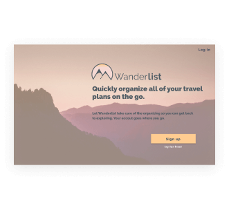
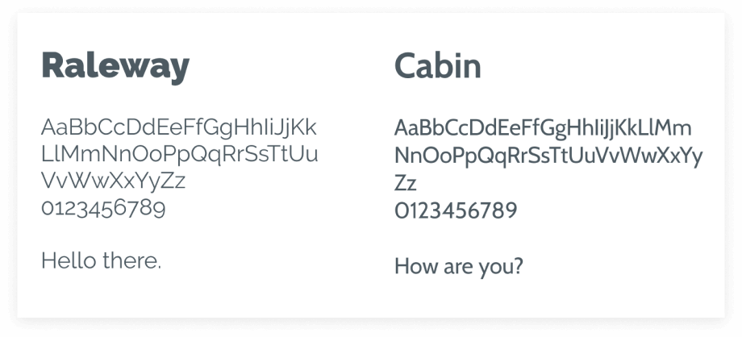

A cloud-integrated travel app that keeps travelers organized while on the go.
The cloud storage market is crowded, and the need to be mindful and inventive in this new storage solution is apparent. Being able to fold in additional problems to solve for this is what we aimed for, to create a unique perspective. Travel is the market that made the most sense in creating a cloud storage solution in this MVP because there are longevity and growth in catering to a market of travelers worldwide.
The key points to keep in mind for this app were the ability to:
I would need to break down the cloud storage and travel markets simultaneously to find an appropriate fit for this app.
This is where Wanderlist enters. Because the playing field of cloud storage and travel is saturated, a unique combination of these features to bring a competitor in Wanderlist to life is apparent.
Through robust research and analysis of potential users, I found several solutions that prove useful within the scope of our MVP.
The first and foremost is bringing an app to life within Wanderlist to quickly organize and store travel information that is also collaborative with other users.
Stemming from that, there was a need to thoughtfully display all aspects of travel plans and remove the need to search through endless emails to keep up to date with bookings.
Displaying information for plane/car bookings, accommodations, activities, restaurants, messaging with travel mates, and photo storage are all important aspects of this app.
UX Design
Visual Design
Branding & Identity
User Surveys
Personas
User Stories & Flows
Competitive Analysis
Paper Prototype
Wireframes
User Testing
Visual Design
Figma
InVision
Usability Hub
Maze
As the premiere researcher, information architect, and designer, it was my job to pull loads of data from different sources and display them in thoughtful ways that cater to the user’s wishes while also satisfying our MVP.
From a Competitive Analysis between Pinterest, OneNote, and Pearltrees, which have a combination of cloud storage options that the stakeholder desired, I found a few key points that would help this app find a place in the market.
The pricing structure is important, and clarity is needed here. A free option should offer enough space for robust features but higher subscription levels can also allow users to customize the product for themselves even more.
The design should provide inspiration through imagery while also allowing space for users to add their own input of notes, structure, and customization. Different tools would allow users to be more interactive with the product and build it to fit their own needs.
Through a User Survey that pulled a large amount of data from potential users with interests in cloud storage services and travel, I was able to find unique insights into what users find helpful and what can be left behind. Insights into most-liked and non-negotiable features.
A common theme discovered here was the preference for mobile devices over the web and this helped us go in the direction of mobile-first for the overall design.
Some of the most robust data came from the next survey question, when users indicated they would use cloud services for their travel organizational needs by:
Many of these areas are confirmations of the project directives from the initial brief. Through additional 1:1 user interviews, I was able to gain direct insight into what users were comfortable with and what lacked in the current services they had been using.

Likes
Non-negotiables
Key Insight: Users were using their cloud storage apps when managing their travel. Although disorganized and difficult to collaborate, it was easy to plug notes in while on the go.
57%
of users say they use their cloud storage app to help them organize travel plans.
87%
of users say they would most likely use cloud storage to compile flight and hotel data, and to share plans with others.
89%
of users say that accessing flight information is the most important feature in a travel app.
User Personas that reflected the overall results from different user niche groups were formed to further funnel research down towards the MVP of Wanderlist. Goals found: Easy to share notes, mobile-friendly, easy to catalog experiences for later reflection (journaling), easy to navigate, organize and categorize documents automatically, collaborative.
Name: Darius
Age/Location: 46-55, San Francisco
Goals: Easy to share notes, mobile friendly, easy to catalog experiences for later reflection(journal).
Frustrations: Too many travel tools to use for different things.
He and his wife have different organizational methods.
Time constraints on compiling memories from the trip

Name: Monica
Age/Location: 26-35, Brooklyn
Goals: Easy to navigate, helps organize and categorize documents, collaboration is key.
Frustrations: Finds cloud storage has security issues.
Collaborating on docs takes too many steps.
| Primary | Secondary | Tertiary |
|---|---|---|
| Traveler | Travel Companion | Spectator |
I sketched out User Flows that stemmed from the previous user stories and adjusted these as needed to create digital versions for easier collaboration with stakeholders. Many insights were found in this process, as users indicated in their goals in our user persona research that they wanted an app that had an easiness.
Aside from the sketches, we went through 4 versions of the digital user flows. The rest of the research and design process brought insights of certain key functions that could be better communicated. Constant reiteration is key.
Content Strategy and building sitemaps helped direct the initial branding of Wanderlist, catering to both the stakeholder’s asks and user’s must-haves.
Time to start building screens. Through some sketching and initial Wireframing, we were able to start seeing Wanderlist come to life with all of the robust research efforts thus far. I had a solid direction to go forth with.
Due to the robust research, each decision from here on out could remain intentional and stick to the guidelines we created as a team, from user to designer.
From these wireframes, I simultaneously created a clickable prototype with the intention of testing users and seeing how our initial ideas played out.
Testing the first prototype would prove fruitful through the initial round of Usability Testing.
I built a script and tested 3 users in total:
I gained a lot of insight on how best to structure Wanderlist going forward.
Key Insights: Sign in / sign up could be clearer. Better ways to structure organizational tools (refining ellipse). More CTA's. Clearer, inclusive language when describing travel options.
Branding work began at this point, and some initial ideas were put in place to create a feel of Wanderlist. Much brainstorming, sketching, use of mood boards, and branding summaries were used here. This is also where I found the overall feel of Wanderlist that would structure past research with future design choices: “Quickly organize all of your travel plans with Wanderlist”. This work was refined through logo work, typeface choices, and additional aspects to mood boards as the overall brand of Wanderlist was built.

A Style Guide was then built to encompass all of the unique aspects of Wanderlist. These stylistic choices were made from the analysis of the competition in both the travel and cloud storage markets, search for differentiation in the current market (what is not currently available? Where do we fit in?), and the business goals, which were ultimately, creating a unique product that solves multiple problems for users.
The style guide went through several iterations after testing rounds, because the color palette needed refining.

Version 1
Key Insight: Many users described feelings of excitement when it came to summertime travel -- thus the need to get closer to a color palette that invoked this.

Version 2
Invoking the adventure and playfulness of travel

Beaches and sunsets are sought after by our users. Why not display these themes in-app?
Raleway carries over to the logo and was a strong contender to continue throughout the design in headers.

With the style guide in place, I went forth with building Hi-fidelity Mockups that we could prove through another round of user testing and accomplish the creation of an MVP. Because much of the branding and color palette had light and airy choices, many rounds of color contrast testing were used in this process as accessibility in design is of high importance. Building a product that caters to all users of different abilities is key. This process also helped to build key components that could be easily reused throughout the design and any future iterations. This helped to structure future deliverables as well.

With a quick round of Preference Testing, I was able to suss out any unclear options directly with users. The insights gained from users here would help direct the final version of Wanderlist to prove in the second round of prototyping and testing.

Question 1: Plan a Trip: Combined dropdown menu, or separated dropdowns?
Answer: Separated dropdowns
Users wanted separated dropdowns so they can see more granular detail within each trip. Visually, more organized.

Question 2: Main page: Scrolling through all trips or having a separate page to expand each category?
Answer: Scroll through all trips.
Users wanted to be able to scroll through an entire list of current and future trips so that there were not extra pages to click forward and back through.
Question 3: Profile settings: Down-carrot or outline stroke around the user image?
Answer: Outline stroke
Users were able to identify off the cuff that clicking on the image would bring them to profiles or settings. This was behavior that was ingrained, and no other direction was needed.
The second, Hi-fidelity version of Prototyping and Usability Testing was put together here. This is where I got to break down key aspects of the design and questions that remain unclear in how the design is presented.
I presented users with questions like:
I learned from this round of testing that more ease could be inserted here to create a more intuitive experience in the app. I also learned that these were key aspects of Wanderlist that users needed the most.
Finalize.
With the insights gained and design iterations worked through, I was able to confidently bring to life Wanderlist and understand from start to finish what this app could accomplish.

After wrapping up Wanderlist and reflecting on how the overall project went, I would say it went really well. I am proud to say that we built a product that is unique to the market and can have longevity there.
Something that worked especially well that lead to this positive reflection was:
Each time, users were excited to use the product and had a lot of wonderful feedback for how they would essentially use Wanderlist. This excitement and eagerness to work with our team was definitely felt.
Something that did not work especially well at first:
There were many struggles trying to figure out the best route for users and what made sense with the overall theme of Wanderlist. There were definitely doubts going into the project with this key aspect in mind, and I particularly knew that this feature had to be less of an afterthought. After the many rounds of testing that I did, and iterations of the design structure and flow, I feel that a solution was found that was not only intuitive but helpful to users as well.
If I had more time to build out Wanderlist past this MVP version, I would definitely focus my attention on the functionality of building more customized trips.
Making this section a bit more robust in the way that it displays information to the user upon sign in would communicate more of the easiness that users have been asking for since the beginning of the project.
I would also focus a lot of attention on integrating location services and reviews (ie: Yelp) so that users could have helpful tools within the app that synced with other, most-used travel tools.
This project reconfirmed for me the power of the user, and how important it is to include them on every step. The insights you gain are extremely valuable, and many ideas stem from the conversations you have with actual users of the product. Their excitement is a driving force that can lead the team forward in times of confusion or uncertainty.